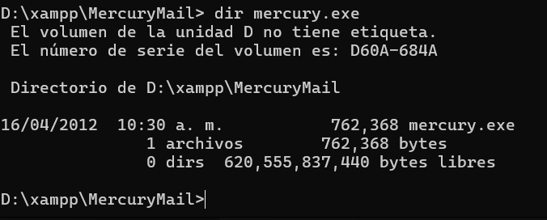
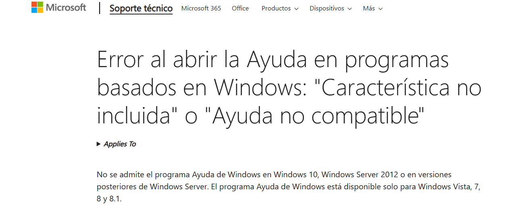
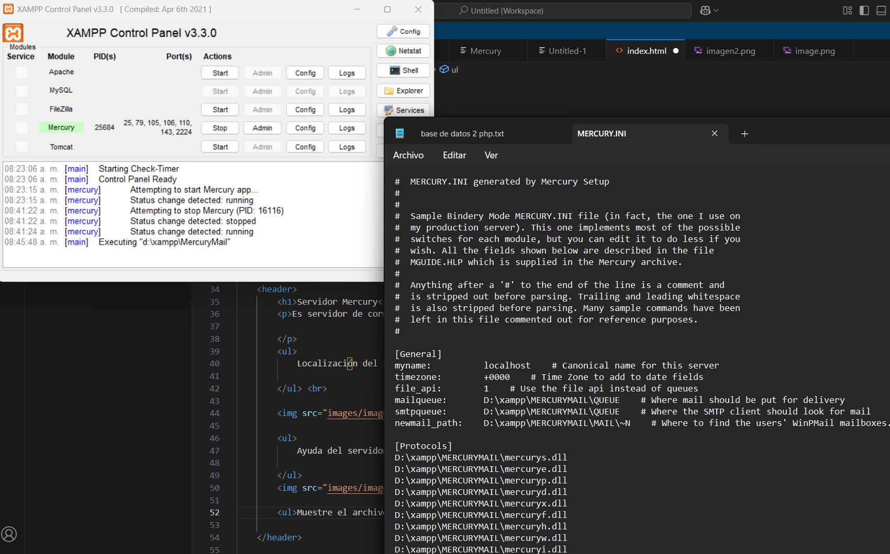
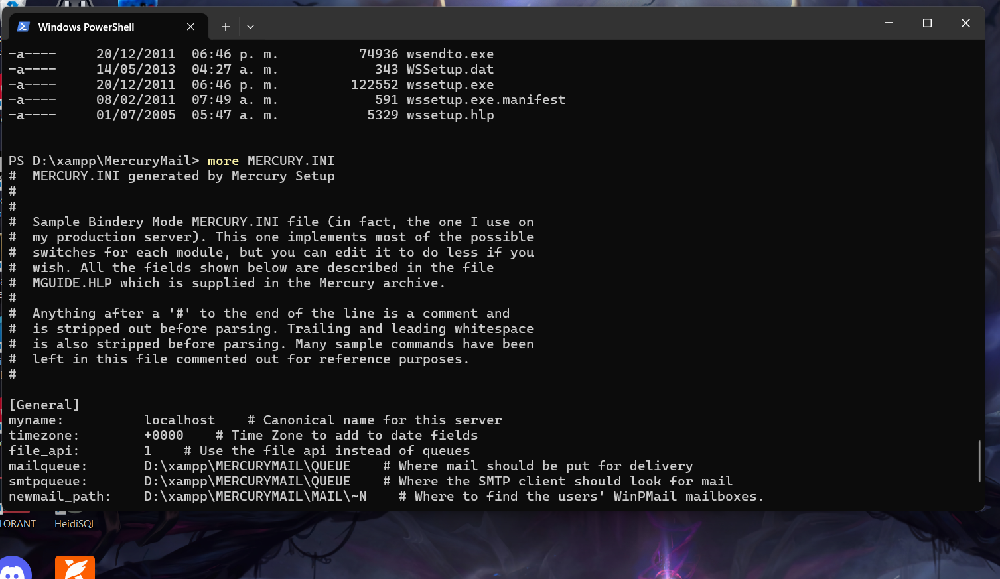
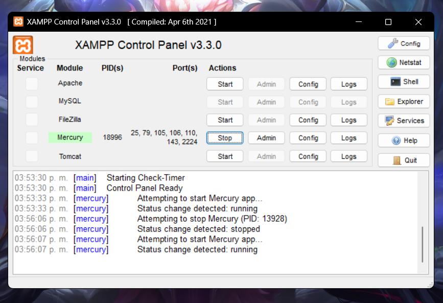
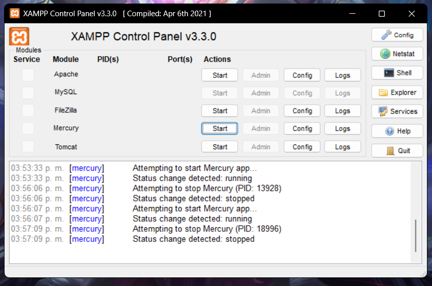
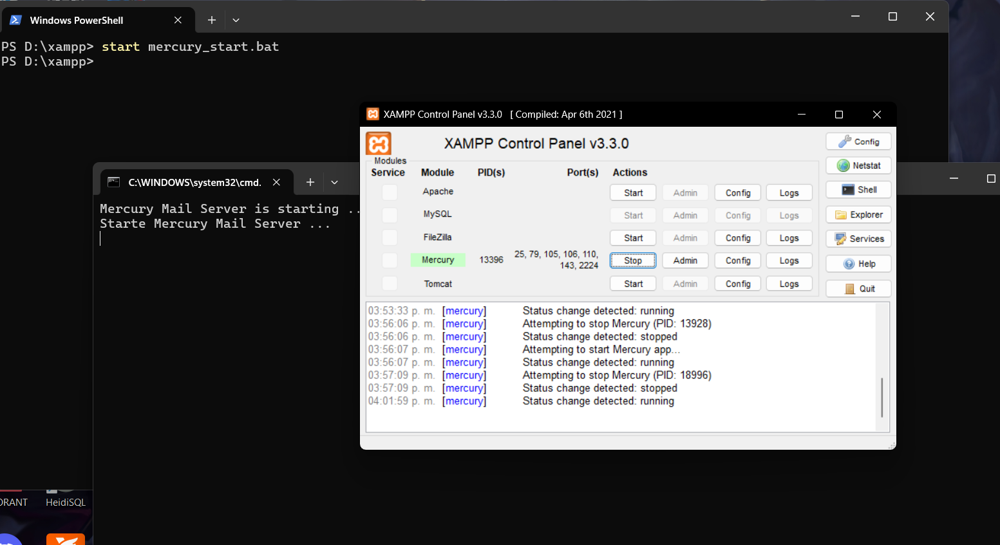
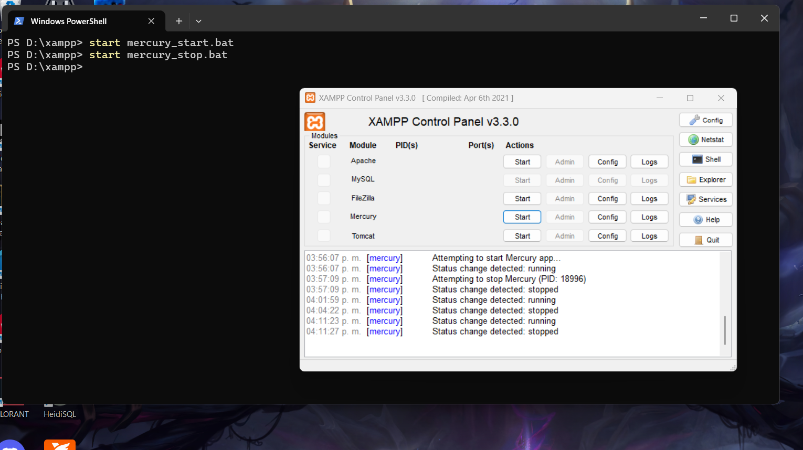

Servidor Mercury
Es servidor de correo electrónico para Windows, desarrollado por David Harris, que solía usarse junto con Pegasus Mail. Este sistema permitía manejar el envío y recepción de correos en redes locales o con conexión a Internet.
Localización del servidor.


Muestre el archivo de configuración de forma grafica.

Archivo de configuración con PS

Arranque del servidor mediante XAMPP

Paro del servidor mediante XAMPP

Arranque del servidor mediante PS

Paro del servidor mediante PS

Ir a la página Acerca de